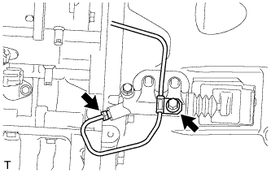
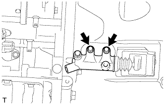

РАБОЧИЙ ЦИЛИНДР СЦЕПЛЕНИЯ (для моделей с 1KD-FTV) > СНЯТИЕ |
| 1. СЛЕЙТЕ ТОРМОЗНУЮ ЖИДКОСТЬ ИЗ ТРУБОПРОВОДА ПРИВОДА СЦЕПЛЕНИЯ |
| 2. СНИМИТЕ ПЕРЕДНИЙ КАРДАННЫЙ ВАЛ В СБОРЕ |
Снимите передний карданный вал (Нажмите здесь).
| 3. ОТСОЕДИНИТЕ ТРУБОПРОВОД ОТ РАБОЧЕГО ЦИЛИНДРА СЦЕПЛЕНИЯ К ГИБКОМУ ШЛАНГУ |
|  |
С помощью разрезной головки отсоедините трубопровод.
Выверните болт.
| 4. СНИМИТЕ РАБОЧИЙ ЦИЛИНДР СЦЕПЛЕНИЯ В СБОРЕ |
|  |
Выверните 2 болта и снимите рабочий цилиндр сцепления.